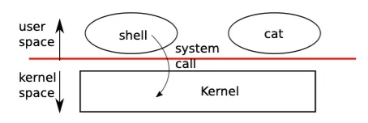
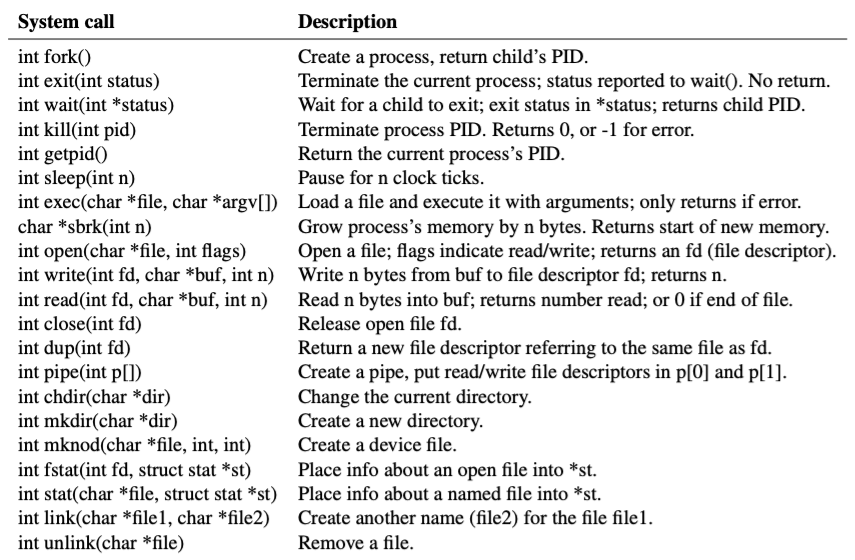
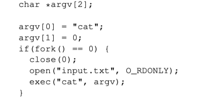
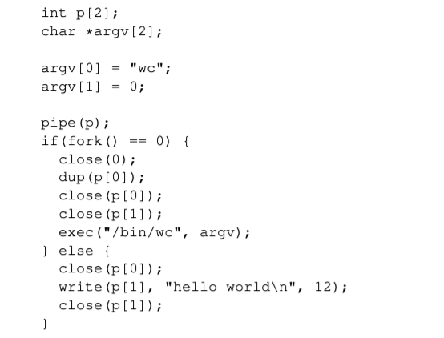
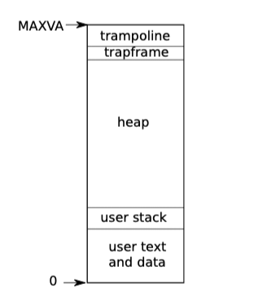

xv6 Operating System — System calls
Introduction
操作系统的目标：
- 第一个就是抽象硬件。通常来说，你会买一个计算机，里面包含了CPU，内存，但是这是一种非常低层级的资源。幸好我们有一些应用程序实现了高层级的接口和抽象，例如进程，文件系统。这些高层级的接口和抽象（Abstraction）方便了应用的开发，也提供了更好的移植性
- 在多个应用程序之间共用硬件资源。你可以在一个操作系统同时运行文本编辑器，程序编译器，多个数据库等等。操作系统能非常神奇的在不相互干扰的前提下，同时运行这些程序。这里通常被称为multiplex。
- 因为在操作系统中可能同时运行很多程序，即使程序出现了故障，多个程序之间互不干扰就变得非常重要。所以这里需要隔离性（Isolation），不同的活动之间不能相互干扰。
- 不同的活动之间有时又想要相互影响，比如说数据交互，协同完成任务等。举个例子，我通过文本编辑器创建了一个文件，并且我希望我的编译器能读取文件，我绝对想要数据能共享。所以，我们希望能在需要的时候实现共享（Sharing）。
- 但是在很多场景下，用户并不想要共享，比如你登录到了一个公共的计算机，例如Athena，你不会想要其他人来读取你的文件。所以在共享的同时，我们也希望在没有必要的时候不共享。这里我们称为Security或者Permission System或者是Access Control System。
- High performence。
- 最后，对于大部分操作系统，必须要支持大量不同类型的应用程序。
OS Structures
User space
用户空间可以运行各种各样的程序，比如VI编辑器、LOL、Markdown、VScode等等。是计算机用户和应用程序操作运行的空间。
Interface | System call
用户空间的程序必须运行在内核之上，并没有实际操作硬件的权限，如果想要获取一些资源，则需要与内核空间交互。二者交互的接口就是系统调用System call。操作系统应当提供多种系统调用，来方便应用程序安全的利用系统资源。

Kernel space
内核空间中运行着内核代码，内核是操作系统的管理者。
Kernel是计算机资源的守护者。当你打开计算机时，Kernel总是第一个被启动。Kernel程序只有一个，它维护数据来管理每一个用户空间进程。Kernel同时还维护了大量的数据结构来帮助它管理各种各样的硬件资源，以供用户空间的程序使用。Kernel同时还有大量内置的服务，例如，Kernel通常会有文件系统实现类似文件名，文件内容，目录的东西，并理解如何将文件存储在磁盘中。所以用户空间的程序会与Kernel中的文件系统交互，文件系统再与磁盘交互。
在一个真实的完备的操作系统中，会有很多很多其他的服务，比如在不同进程之间通信的进程间通信服务，比如一大票与网络关联的软件（TCP/IP协议栈），比如支持声卡的软件，比如支持数百种不同磁盘，不同网卡的驱动。所以在一个完备的系统中，Kernel会包含大量的内容，数百万行代码。
Hardware
操作系统的一些驱动程序控制的硬件。包括显卡、声卡、磁盘等等物理实体。属于资源。
OS System calls
操作系统通过提供一些提前设计好的程序给用户程序使用，这类程序被称为接口（interface），也被称为System call。设计一个好的接口是很麻烦的，一方面，我们希望它足够的简单（可以更方便的实现这个功能），另一方面，我们又想给应用提供一站到位的服务。一个技巧就是结合不同的机制来构造一个接口，提供更强的通用性。下图展现了xv6中实现的一些系统调用。

Processes and memory
一个xv6的进程由 用户空间的内存 和 进程状态 组成。Xv6采用时间片的方式切换进程。当进程不执行的时候，xv6会保存CPU的寄存器状态，直到下一次运行时恢复。Kernel通过PID来唯一标识一个进程。
Fork系统调用：当一个进程调用fork时，会复制一个完全一样的进程（拥有相同的内存内容）。fork可以复刻一个进程，就像是程序走着走着突然裂开了一个平行空间一样。也可以理解为父进程通过分裂，分裂出一个子进程。两个进程的所有信息（内存大小，数据，代码，PC指向）完全一致，除了pid（process identifier）。对于父进程来说，fork的返回值是子进程的pid。子进程的返回值则是0。这个值可以作为分支判断条件，区分这分支是父进程还是子进程，来实现不同的操作。下面的例子可以很好的说明fork的功能。
int main(){
fork();
fork();
fork();
print("hello world")
}
// console output
hello world
hello world
hello world
hello world
hello world
hello world
hello world
hello world

Fork也会返回，在父进程中，fork返回子进程的pid。在子进程中，fork返回0。
Exit系统调用：exit会让调用它的程序结束执行并且释放内存和文件资源。exit接收一个整数状态参数，0表示成功，1表示失败。
Wait系统调用：wait会返回当前进程的一个退出的子进程的PID，并且将退出状态参数复制到传入wait的参数中。如果没有子进程退出，wait等待。如果调用者没有子进程，wait马上返回-1。如果父进程不关心子进程的退出状态参数，传递一个（int *）0即可。
Exec系统调用：exec会将当前的进程内存替换为一个从文件加载的新的内存影像。这个文件必须遵循特定格式，xv6用ELF格式（包含数据和指令，二进制文件，比如“/bin/echo”）。如果exec执行成功，那么程序不会返回，而是会从文件指定的地方开始。
Xv6的shell就是用上述的几个系统调用实现的。在main loop中，调用getcmd读取用户的输入，然后调用fork，子进程执行runcmd，父进程等待。runcmd运行实际的指令。
I/O and File descriptors
文件描述符是代表一个整形数字，代表一个文件。每个进程都有自己的一个表，文件描述符用来索引表中的文件。每个进程的文件描述符都从0开始。文件描述符0代表标准输入，1代表标准输出，2代表标准错误。
Read系统调用：读系统调用会从文件描述符fd指的文件中读取n个字节，复制到buf中，返回读取的字节个数。每个文件描述符都有一个与之对应的offset。读取一次，offset就会向后移动n个字节，下一次读取会从之后继续读取。
Write系统调用：将buf中n个字节写入文件描述符fd所指的文件中。
Close系统调用：释放一个文件描述符，可以被之后的open、pipe、dup系统调用使用。最新allocate的文件总是会使用最小的文件描述符。
假如我们实现一个cat，cat会将数据从标准输入符输出到标准输出，下面是一个代码片段。
char buf[512];
int n;
for(;;)
{
n = read(0, buf, sizeof buf);
if(n == 0)
break;
if(n < 0)
{
fprintf(2, "read error\\n");
exit(1);
}
if(write(1, buf, n) != n)
{
fprintf(2, "write error\\n"); exit(1);
}
}文件描述符和fork一起可以让IO重定向的实现很简单。首先，fork会复制父进程的file table，所有子进程也会和父进程一样开启同一个文件。exec系统调用可以替换调用它的进程的内存但仍保留着file table。这就可以让shell实现IO重定向（先fork进程，在子进程中，关闭标准输入，打开文件“input.txt”，此时的该文件描述符为0。之后再执行cat程序，就实现了将input.txt文件的内容输出到标准输出的功能）。

这里就能体会到，文件描述符的作用。在cat的程序中，只关心从哪个文件描述符读取，并不关心它到底是键盘输入还是显示器输出，也不关心到底是pipe还是其他，凡是可以用文件描述符表示的，都可以。
Pipes
Pipe提供了一种进程之间交流的工具。Pipe由一对文件描述符组成，向一端写入数据就可以再另一端读取数据。

上面的程序创建了一个pipe，并且fork了一个子进程。由于是fork，子进程的两个p[0]，p[1]文件描述符也指向了pipe文件。
子进程首先关闭标准输入，调用dup，将p[0]所指向的文件让fd=0也指向它（因为最新allocate的文件总是会使用最小的文件描述符）。之后我们就可以关闭p[0]，p[1]对应的文件描述符，因为我们已经不需要这两个文件描述符指向pipe文件了。
父进程关闭掉p[0]，通过p[1]向pipe文件写入hello world，再关闭p[1]。
Pipe文件一旦有东西写入，wc程序内部的read操作就会从阻塞状态中恢复，执行读取数据操作。
NOTE：Pipe文件是在内存中被创建的。
Abstracting physical resources
首先需要问一个问题，why does operating system matter？我们到底为什么需要一个操作系统来作为应用程序与计算机硬件的一个中间层呢？
- 我们想要multiplexing，也就是多路并行。同时能允许很多程序运行。在嵌入式系统中，因为应用程序之间没有bug，并且互相信任彼此，因此采用的是一种协同调度的方案。但在实际的操作系统中，应用程序往往不是well-behaved的。很多程序有bug，有时并不会主动释放CPU，这时就需要一个强有力的管理员去迫使程序放弃CPU给其他程序使用。
- 我们想要security和isolation。应用程序会有bug和恶意，会尝试非法访问硬件和其他程序的内存地址。这会造成严重的后果。因此操作系统通过虚拟地址以及对硬件的抽象，强制的将硬件和程序的内存保护起来。
操作系统对硬件资源做了抽象，这样，硬件的控制权全部由OS控制，因为OS的创作者一定是well-behaved，同时OS仅仅为用户提供一些interface，这些interface的背后由操作系统进行审查，如果应用程序有恶意的请求，将会终止其对硬件资源的访问。
下面列举了一些硬件资源的抽象：
- 磁盘对应文件系统
- CPU对应进程
User mode | Kernel mode | System calls
在CPU的硬件层面，提供了强制的硬件隔离性。CPU在设计时，就将其指令分为用户级别的指令和内核级别的指令（特权指令）。
普通权限的指令都是一些我们熟悉的指令，例如将两个寄存器相加的指令ADD、将两个寄存器相减的指令SUB、跳转指令JRC、BRANCH指令等等。这些都是普通权限指令，所有的应用程序都允许执行这些指令。
特殊权限指令主要是一些直接操纵硬件的指令和设置保护的指令，例如设置page table寄存器、关闭时钟中断。在处理器上有各种各样的状态，操作系统会使用这些状态，但是只能通过特殊权限指令来变更这些状态。
与之分别对应的是用户态和内核态。当用户态的下尝试执行内核态的指令时，CPU就会跳入内核态，配合操作系统的代码对这种非法访问进行处理。
在操作系统的软件层面，会分为kernel代码和user代码。user代码若想调度硬件资源，比如读文件、写文件时，都会通过一个叫做System call的函数，此时操作系统由user进入kernel，CPU的控制权从用户程序转移给操作系统，操作系统会对用户的请求做一些检查和操作，完成这些操作后，最后返回到用户代码，继续执行。但并不允许用户直接调用内核的system call函数，这个过程靠的是一个叫做ECALL的指令，ECALL会将CPU从user mode转换为supervisor mode，并将代码跳入boot时设置好的内核代码地址处。
Kernel organization
一个重要的问题就是，我们的kernel代码应该存放哪些操作系统的部分。这里就引入了宏内核和微内核的概念，从这里可以提现trade-off。
- 宏内核就是把所有的操作系统组件放入内核空间中，这样的好处是便于设计者设计。同时可以让操作系统不同组建在内核状态下沟通，效率更高。缺点就是，设计起来很容易出现bug，复杂性较大。
- 微内核就是选取操作系统最核心的组件放入内核空间，当应用程序需要调用非核心组件的服务时，由于非核心组件在用户空间，应用程序需要先向内核空间发送请求，内核再返回对应服务的用户空间执行，执行完毕后再回到内核空间，再回到应用程序。这样的好处是内核相对轻量化，设计复杂度低。但需要频繁的kernel-user转换，这是一个不容忽视的overhead。
Process overview
Xv6的一个隔离单元就是一个process。一个process可以理解为一台物理机器的映射。在这个process抽象中，进程会误以为自己独占一台机器，看不到其他的任何一个进程。自己拥有一大块内存空间，单独的CPU等等。
- 内存层面：RISC-V提供了page table的硬件支持，这样可以让进程拥有一块独有的内存地址空间。RISC-V的page table的作用就是将虚拟地址转换为实际的物理地址。并且提供了不同进程内存之间的隔离性。下图展示了一个进程的地址空间的结构。trampoline是用来kernel-user转换的一个page，trapframe是用来保存trap时寄存器状态的一块内存。

- 数据结构层面：struct proc结构体里记录了所有关于一个进程的数据结构。例如page table，kstack等等。p→state记录了进程当前的状态。
- 程序执行层面：一个进程有一个user stack和一个对应的kernel stack，在用户空间运行在user stack，在内核空间运行在kernel stack，二者随着状态空间的转换而转换。
- 空间转换层面：进程通过ECALL指令进入内核，将CPU控制权交给OS。通过SRET指令返回用户空间。
Security Model
操作系统应当假设用户代码会竭尽全力破坏系统和入侵其他程序。用户程序可能非法访问其他内存，可能会尝试执行RISC-V的任何指令，可能会读取或写入RISC-V的控制寄存器，可能会传入一些值骗操作系统做一些事情。
内核的设计目标就是，严格限制每一个进程只能读写自己的内存，使用32个通用寄存器，按照system call允许的操作执行代码。
操作系统应当假设内核代码是well-meaning的。期望内核代码没有bug，并且不包含任何有害的代码。